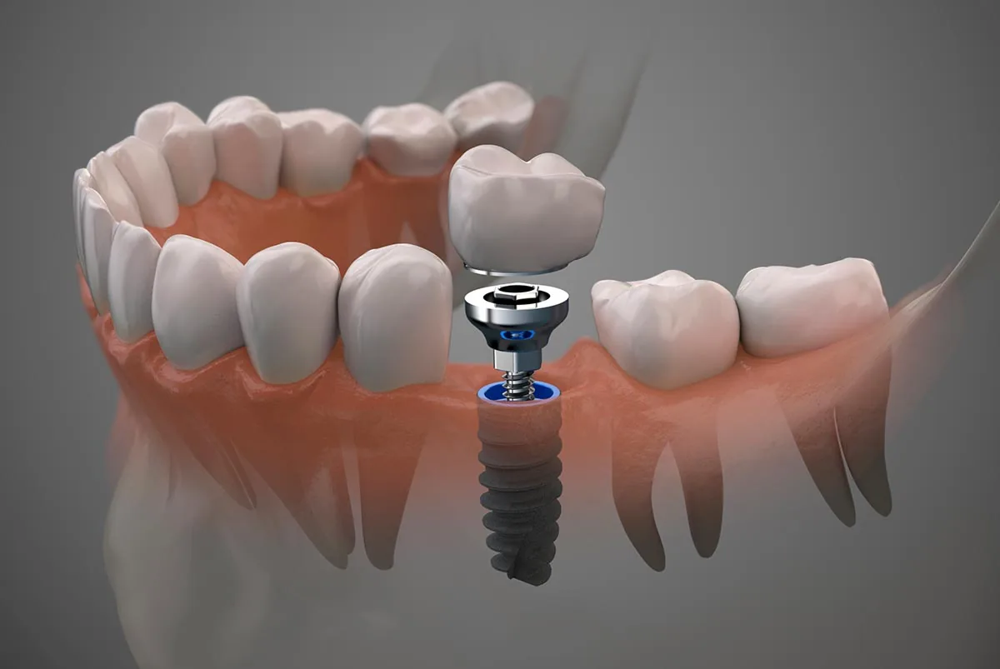
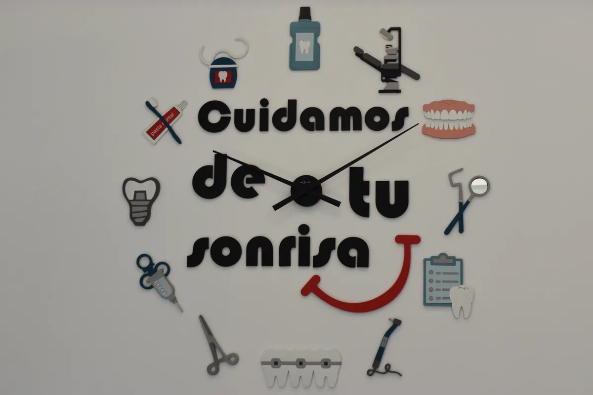
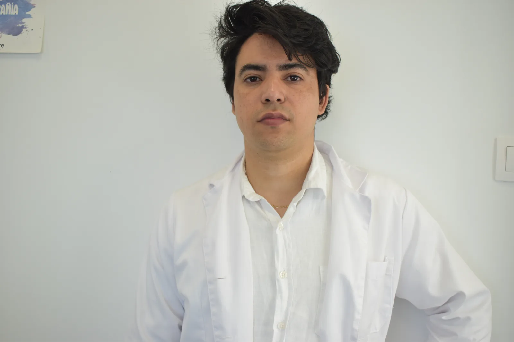
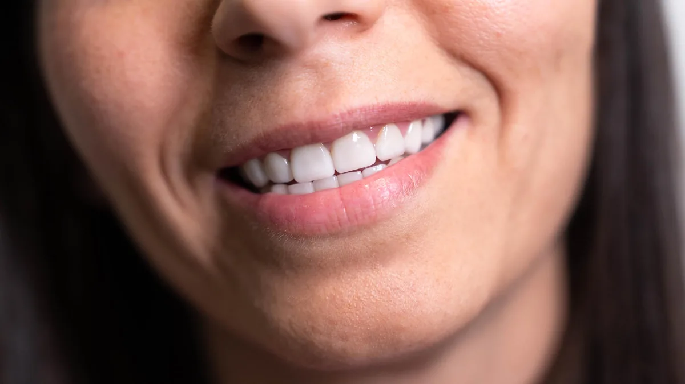

01Implantes dentales
Consultar tratamiento Implantología
Implantes dentales, coronas y rehabilitaciones para recuperar piezas perdidas con seguridad y estética.
Tratamientos dentales personalizados, atención cercana y tecnología para cuidar tu sonrisa con seguridad, claridad y confianza.
Descubre nuestros tratamientosEn Dali Dent Parla combinamos diagnóstico profesional, explicación clara y soluciones adaptadas a cada paciente.

01Implantes dentales, coronas y rehabilitaciones para recuperar piezas perdidas con seguridad y estética.

02Alineadores transparentes para corregir la sonrisa de forma cómoda, discreta y personalizada.

03Brackets para mejorar la mordida, alinear los dientes y conseguir una sonrisa más armónica.

04Tratamientos estéticos para mejorar color, forma, proporción y armonía de la sonrisa.
Escríbenos y te orientamos para encontrar la solución más adecuada para tu caso.
En Clínica Dali Dent Parla priorizamos la cercanía, el diagnóstico claro y la planificación personalizada para que cada visita sea cómoda, honesta y fácil de entender.
Valoramos tu caso antes de recomendar un tratamiento.
Explicamos opciones y resolvemos tus dudas con calma.
Cuidamos funcionalidad, prevención y apariencia de tu sonrisa.
Acompañamiento en todas las fases del tratamiento.
Estudiamos tu caso de forma individual para ofrecerte tratamientos adaptados a tus necesidades, cuidando tu salud bucodental y la estética de tu sonrisa.
Nuestro proceso está diseñado para cuidar tu salud bucodental desde el primer momento.
Estudiamos tu caso antes de plantear el tratamiento más adecuado.
Utilizamos recursos clínicos para mejorar planificación, comodidad y precisión.
Especialistas cualificados para cuidar tu salud y estética dental.
Te acompañamos con explicaciones claras en cada visita.
Valoración positiva en Google Reviews
Buena atención desde recepción hasta gabinete. Te explican cada paso y el trato es muy cercano.
Ammar GarcíaLlevo años acudiendo con mi familia. Equipo atento, explicación clara y ambiente de confianza.
Maribel García-CastroMuy buen trato con niños y adultos. Ambiente amable y profesional durante todo el tratamiento.
Paciente de Clínica Dali DentArtículos y consejos para cuidar tu salud bucodental.

Una guía sencilla sobre cuándo puede estar indicado un implante dental, qué se valora antes del tratamiento y cómo planificarlo con seguridad.
Leer más
La limpieza profesional ayuda a controlar placa, sarro, manchas superficiales e inflamación de encías cuando el cepillado diario no es suficiente.
Leer más
Antes de aclarar el tono dental conviene revisar caries, encías y sensibilidad. Te contamos qué valorar para hacerlo con seguridad.
Leer másEstamos aquí para ayudarte. Contacta con Clínica Dali Dent Parla para reservar tu cita.
C. Carlos V, 23, 28982 Parla, Madrid